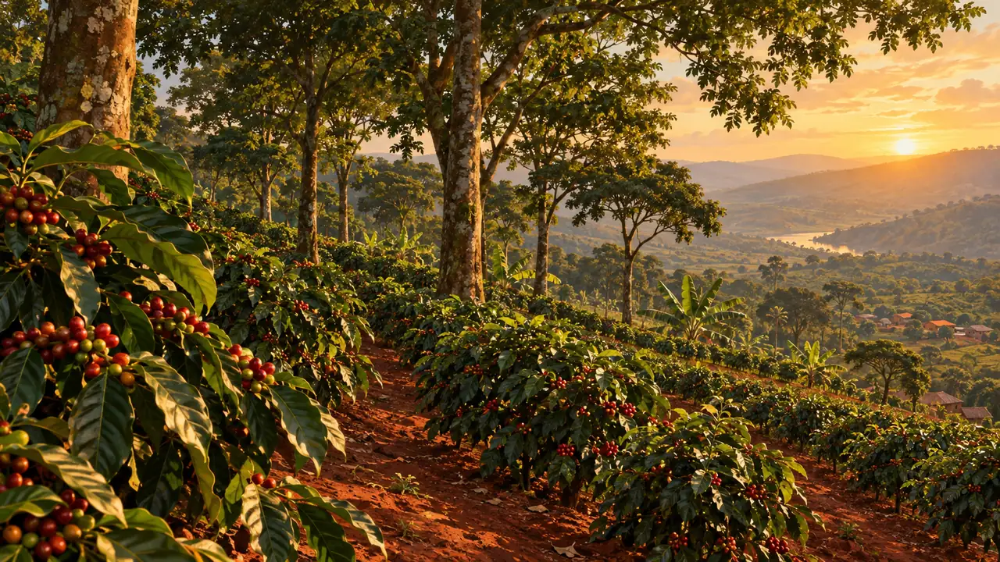
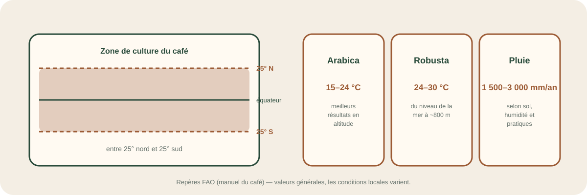
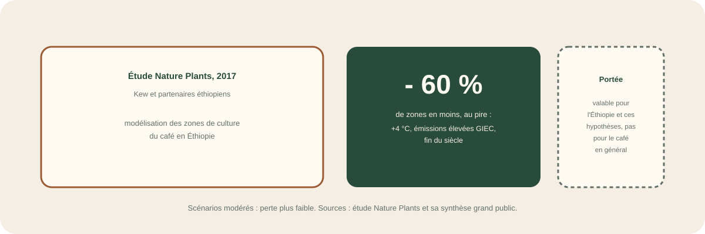
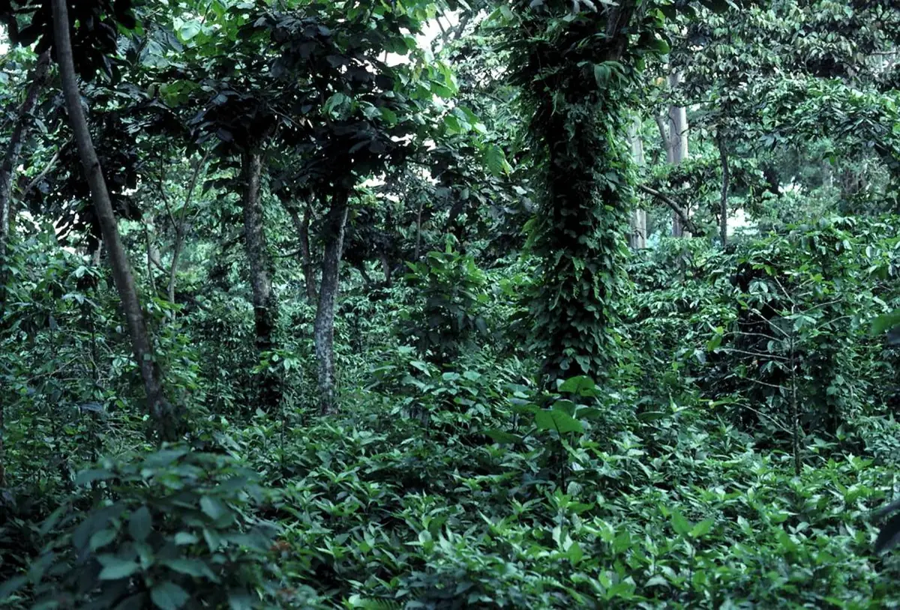
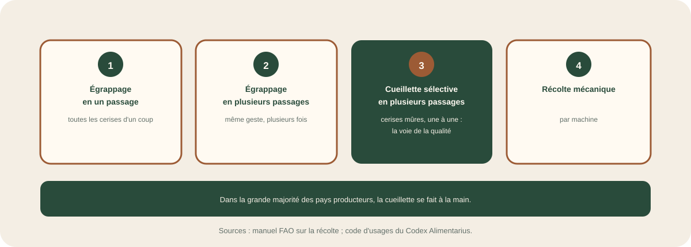

Culture et agronomie
La qualité d’un café se prépare dans le champ. Climat, altitude et pluie fixent déjà beaucoup de ce que la tasse peut offrir.
L’essentiel en trois points
- Le café se cultive entre 25° nord et 25° sud, avec des exigences précises selon l’espèce [1].
- Températures idéales moyennes : 15–24 °C pour l’Arabica, 24–30 °C pour le robusta [1].
- Étude de 2017 (Éthiopie) : les zones actuelles de culture pourraient reculer jusqu’à 60 % dans le scénario le plus pessimiste (+4 °C d’ici 2100) ; des scénarios plus modérés donnent des pertes moindres [2] [3].
Approfondir
Touchez un titre pour ouvrir ou fermer la rubrique.
Température et gel
Les températures moyennes idéales vont de 15 à 24 °C pour l’Arabica et de 24 à 30 °C pour le robusta, qui supporte la chaleur et la sécheresse mais pas les températures nettement inférieures à 15 °C. Tous les caféiers craignent le gel [1].

Altitude
Pluie
Changement climatique
Une étude publiée en 2017 (Nature Plants, Kew et partenaires éthiopiens) modélise l’Éthiopie : les zones actuelles de culture du café pourraient diminuer jusqu’à 60 % pour une hausse de 4 °C d’ici la fin du siècle, scénario d’émissions élevées du GIEC ; avec des scénarios plus modérés, la perte est plus faible. Le résultat vaut pour l’Éthiopie et ces hypothèses, pas pour le café en général [2] [3].

Ombrage et agroforesterie
L’effet de l’ombrage sur le rendement fait l’objet d’un long débat dans la recherche, avec des résultats contrastés selon les variétés [4]. Une synthèse indique que des niveaux d’ombrage intermédiaires (environ 35 à 50 %) donnent les rendements les plus élevés, avec des comparaisons difficiles d’une région à l’autre [5]. Pour le robusta, l’ombrage protège des variations de température, de l’érosion et du rayonnement, mais comporte des compromis de production [6]. Les pratiques agroforestières sont aussi étudiées pour la gestion de la rouille et du scolyte [7].


Récolte
Dans la grande majorité des pays producteurs, le café est cueilli à la main ; pour une bonne qualité, les cerises doivent être cueillies une à une, seulement mûres [8]. Le code d’usages du Codex distingue quatre systèmes : égrappage en un passage, égrappage en plusieurs passages, cueillette sélective en plusieurs passages et récolte mécanique [9].

Image d’en-tête : illustration générée pour le site, à valeur éditoriale, pas un document photographique. Les autres visuels de la page portent leur propre crédit en légende.
Termes du dictionnaire
Références
Les affirmations renvoient aux références numérotées ci-dessous, avec leur date de consultation. Les rubriques marquées « à documenter » n’ont pas encore de source vérifiée et n’affirment rien. Certaines sources sont secondaires : leur nature est indiquée dans leur intitulé.
- FAO, Coffee: introduction et écologie (X6939E) · consulté le 20 novembre 2026
- Moat et al. (2017), « Resilience potential of the Ethiopian coffee sector under climate change », Nature Plants · consulté le 20 novembre 2026
- BBC News (2017), reprise de l’étude Kew et partenaires éthiopiens sur le café en Éthiopie · consulté le 20 novembre 2026
- Agronomy for Sustainable Development (2022), « Shade effects on yield across different Coffea arabica cultivars » · consulté le 20 novembre 2026
- Jha et al. (2014), A review of production, ecosystem services and farmer livelihoods in shade coffee · consulté le 20 novembre 2026
- Agronomy for Sustainable Development (2020), « Effects of shade trees on robusta coffee growth, yield and quality » · consulté le 20 novembre 2026
- Revue systématique : rouille et scolyte en agroforesterie (Smart Agricultural Technology, 2024) · consulté le 20 novembre 2026
- FAO, Coffee: conclusions et recommandations, qualité de la récolte (X6939E05) · consulté le 20 novembre 2026
- Coffearium, récolte et tri des cerises (cite le code d’usages du Codex) · consulté le 20 novembre 2026